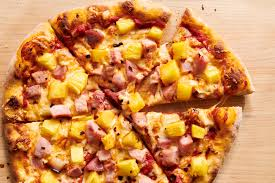
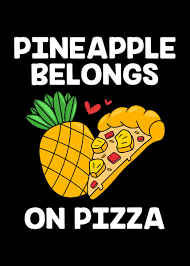
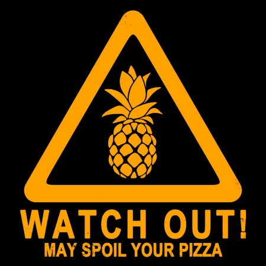

An amazing hangover food pizza with pineapple is absolutely delicious, In a world where there’s all sorts of different fast food options I find myself reaching for a classic pineapple pizza the most.
Thanks to the sweet flavour pineapple adds a layer of delicious sweetness to the otherwise kinda bland taste of classic pizza, additionally to the boost in flavour pineapple adds a fun texture to each bite with the bursting of each pineapple piece making eating a pineapple pizza a more dynamic activity that takes you to flavour heaven after a long night out.
In conclusion pineapple definitely belongs on pizza if not only because of its delicious flavour contributions then because of its textural contributions which work in tandem to turn any boring dull slice of basic pizza into a fun sweet and salty slice of heaven.
Created in the southern Italian town of Gaeta in 997 AD, pizza has become a global staple for comfort food and represents the culinary genius of Italy. Classic Italian pizza holds hundreds of years of tradition, culture, and deliciousness in every bite.
The classic simplicity of tomato sauce, mozzarella cheese, a drizzle of olive oil, and basil leaves a tantalizing taste that transports you to a warm sunny day in the streets of Italy, filling both your heart and stomach with joy.
However, pizza's classic beauty has come under attack in modern times, with the addition of ingredients like pineapple by uncultured individuals threatening the delicious sanctity of pizza.
Being the most common new addition to pizza nowadays, pineapple creates:
Due to both its textural and flavor effects, pineapple simply does not belong on pizza. At most, the addition of pineapple should be seen as an attack on one of Italy's cultural crown jewels.
